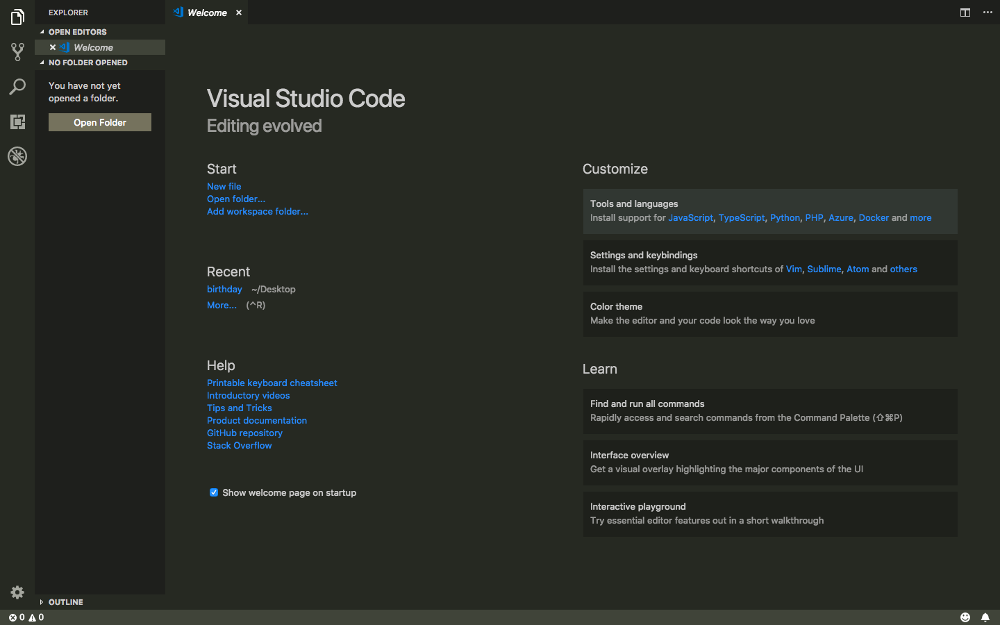
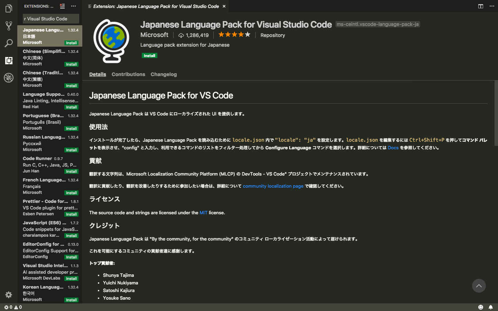
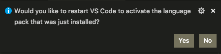
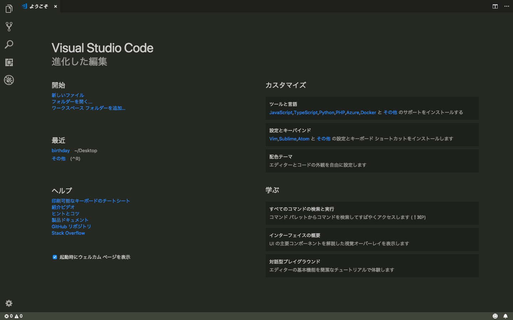

プログラミング基礎
プログラミングとは
皆さんはプログラミングが何なのか、どうして必要なのかを知っていますか？
「プログラミングとはコンピュータープログラムを作成することにより、人間の意図した処理を行うようにコンピューターに指示を与える行為である。」
とWikipediaに記載されています。
では皆さんはプログラミングをしたことはありますか？
少し遠い存在に感じるかもしれませんが、実は日常の様々なシーンで使われています。
今プログラミングは私たちの生活に欠かせないものになっています。
例えば皆さんが毎日使っている携帯電話やパソコンを動かすにはプログラミングが使われています。
そんな身近なプログラミングについて学習をしていきます。
プログラミング言語について
ではどうすればプログラミングを始めることができるのでしょう。
まずはプログラミング言語を理解することから始まります。
皆さんは日本語を話していると思います。しかしイギリスでは英語を話している方が大半です。
同じ様にプログラミングでもパソコンが理解する言葉を使わないといけません。
またその言語の種類も様々で、200以上の言語が存在しています。
その中にはAndroidアプリを作るための言語やWebサイトを作るための言語など用途によって別れています。
現在、主要に使われているのは約20種類で用途によって使い分けることが重要になってきます。
セットアップ
実際にプログラミングをするためにはエディターというものを使います。
エディターもたくさん種類があり、使う人の好みで選びます。
今回は"VisualStudioCode"を使用していきます。（以下VScode）
このサイトからVScodeをダウンロードしてインストールしてください。
https://code.visualstudio.com/

この様な画面が出れば成功です。
今のままでは全てが英語表記なので、読みやすくするために日本語化しましょう。
左端に5つアイコンがあります。そこの下から2番目のExtensionsをクリックしてください。
そしたらそこにJapanese Language Pack for VisualStudioCodeと検索してください。

この画面が出たら成功です。
installボタンを押してインストールして行います。

この表示が出たらYesを押します。
そうすると再起動が始まり日本語対応になっています。

この様に日本語の画面になっていれば成功です。
これでエディターのセットアップは終了となります。
GoogleChromeをインストールしよう
皆さんウェブブラウザは何を使用していますか。
Windowsの方ならMicrosoft Edge、MacならSafariが標準ブラウザとして入っています。
しかし今回はGoogleChromeを使用します。
使用する理由は動作が軽くて使いやすく、WindowsとMacの両方で使用することができるからです。
ここからインストールをしてください。
https://www.google.co.jp/chrome/
これでセットアップは終了になります。
では次の章へ進んでください。